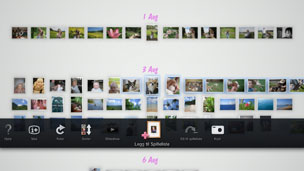

Opprette en spilleliste over valgte fotografier
Du kan velge fotografier som skal ligge i en spilleliste. Med en spilleliste kan du når som helst vise de valgte fotografiene i samme rekkefølge.
Opprette en spilleliste
1. |
Velg et bilde fra [Biblioteksområde] som du vil legge til spillelisten, og trykk på  |
||||||||||||
|---|---|---|---|---|---|---|---|---|---|---|---|---|---|
2. |
Bruk venstre spak til å flytte et tomt område i [Spillelisteområde], og trykk på |
||||||||||||
3. |
Still inn følgende alternativer for spillelisten.
|
 (Legg til spilleliste).
(Legg til spilleliste). -knappen.
-knappen.
 (Musikk)-kategorien i XMB™-skjermen.
(Musikk)-kategorien i XMB™-skjermen.Tips
- Innstillingene for spillelisten kan redigeres senere under
 (Rediger).
(Rediger). - Hver spilleliste kan ha sine egne innstillinger.
Legge fotografier til en spilleliste
1. |
Velg fotografiene som du vil legge til spillelisten, trykk på |
|---|---|
2. |
Velg spillelisten og trykk på |
Redigere innstillinger for en spilleliste
Du kan redigere innstillinger for en spilleliste. Velg spillelisten som du vil redigere, og trykk deretter på  -knappen, og velg deretter (Rediger).
-knappen, og velg deretter (Rediger).
Flytte en spilleliste
Du kan flytte en spilleliste til en annen plassering. Velg spillelisten som du vil flytte, og trykk deretter på -knappen, og velg deretter  (Flytt). Du kan flytte spillelisten med venstre spak.
(Flytt). Du kan flytte spillelisten med venstre spak.
Tips
Du kan også flytte en spilleliste uten å bruke menyen. Velg spillelisten, og mens du trykker og holder inne  -knappen, bruker du den venstre spaken til å flytte spillelisten.
-knappen, bruker du den venstre spaken til å flytte spillelisten.
Slette en spilleliste
For å slette en spilleliste, velger du spillelisten som du vil slette, trykker på -knappen og velger  (Slett).
(Slett).